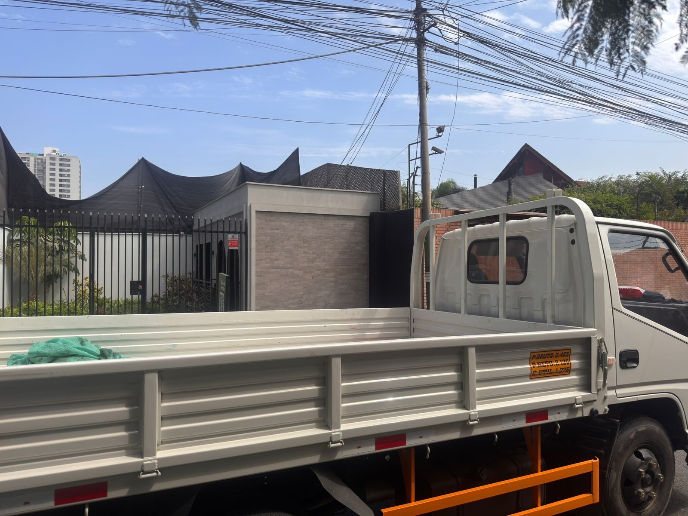

Recojo de desmonte general, sacos, escombros, madera, mayólicas, ladrillo y residuos de obra.

Especialistas en Lima Metropolitana
Retiro de desmonte en Lima rápido y coordinado
Recojo de desmonte general, embolsado, suelto, escombros y residuos de remodelación. Atendemos Surco, San Isidro, Miraflores, San Borja, La Molina, Magdalena, Surquillo, Barranco, Chorrillos y más zonas.
✓ Desmonte embolsado y suelto✓ Cotización por fotos✓
Atención en Lima Metropolitana
Servicios
Retiro de desmonte
Cotización por fotos
Remodelaciones y obras
Solución rápida para retirar desmonte de viviendas, edificios y remodelaciones
Envíanos fotos, distrito, piso de recojo, acceso y horario. Así calculamos mejor el servicio.
Atención para casas, departamentos, oficinas, locales comerciales y obras pequeñas.
Ventaja clave
Recogemos desmonte embolsado y suelto
El cliente no tiene que adivinar si el servicio aplica. Revisamos tus fotos, evaluamos el volumen aproximado y coordinamos la unidad adecuada.
- ✓ Desmonte embolsado
- ✓ Desmonte suelto
- ✓ Escombros de construcción
- ✓ Residuos de remodelación
Trabajos reales
Solicitar
cotización
Galería de retiro de desmonte en Lima
Fotos propias de servicios realizados por Transportes Luchito. Mostramos una galería general para Lima Metropolitana porque la prioridad es demostrar capacidad, unidades y trabajos reales sin forzar fotos por distrito.
Camión para retiro de desmonte en Lima
MetropolitanaTrabajo real de Transportes Luchito
Retiro de desmonte embolsadoRecojo de sacos,
escombros y residuos de remodelación
Carga de desmonte y escombrosServicio de retiro de
residuos de obra
Recojo de desmonte en zona residencialAtención
coordinada para viviendas y edificios
Retiro de residuos de remodelaciónTrabajo real con
unidad de carga
Servicio de desmonte embolsadoRecojo de sacos de
construcción y remodelación
Camión para servicio de desmonteUnidad lista para
recojo en Lima Metropolitana
Recojo programado de desmonteAtención para
residencias, oficinas y remodelaciones
Retiro de escombros y residuosServicio para obras
pequeñas y remodelaciones
Carga y transporte de desmonteRetiro de escombros
con unidad de carga
Servicio de desmonte generalRecojo coordinado según
volumen y acceso
Retiro de desmonte en propiedad privadaServicio
realizado con acceso coordinado
Camión para retiro de desmonteUnidad de Transportes
Luchito en servicio
Retiro de escombros y desmonteServicio de recojo
para remodelaciones
Recojo de residuos de remodelaciónTrabajo con camión
de carga
Retiro de desmonte embolsadoRecojo de sacos y
residuos de obra
Carga de sacos de desmonteServicio de desmonte
general en Lima
Atención en Lima Metropolitana
Retiro de desmonte embolsado y suelto, eliminación de escombros, residuos de remodelación y limpieza de techos. Atención rápida en Surco, San Isidro, Miraflores, San Borja, La Molina, Magdalena, Surquillo, Barranco, Chorrillos, San Luis y todo Lima Metropolitana.
Cómo cotizar
Envíanos esta información
- Distrito y dirección referencial
- Fotos claras del desmonte
- Cantidad aproximada o número de sacos
- Piso, ascensor, escaleras o facilidad de acceso
- Horario tentativo para el recojo
Mensaje recomendado
Hola, deseo cotizar retiro de desmonte. Estoy en [distrito]. Adjunto fotos. ¿Me puede indicar precio y disponibilidad?
Enviar mensajePreguntas frecuentes
Dudas comunes antes de contratar
¿Retiran desmonte embolsado y suelto?
Sí. Realizamos retiro de desmonte embolsado, desmonte suelto, escombros y residuos de remodelación, previa evaluación por fotos.
¿Cómo calculan el precio?
Depende del volumen, distrito, acceso, horario y tipo de material. Por eso pedimos fotos para dar una cotización clara.
¿Atienden edificios y oficinas?
Sí. Coordinamos con propietarios, administración, portería o encargados de obra.